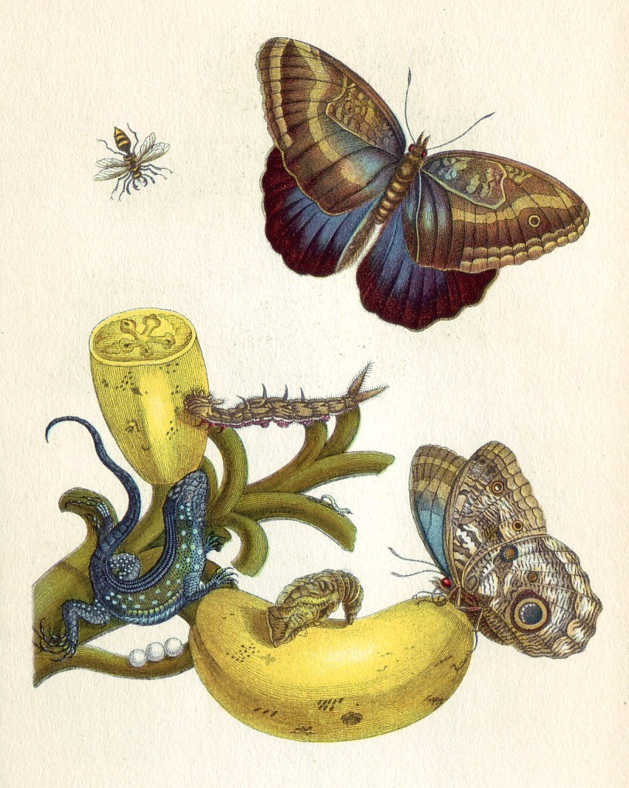
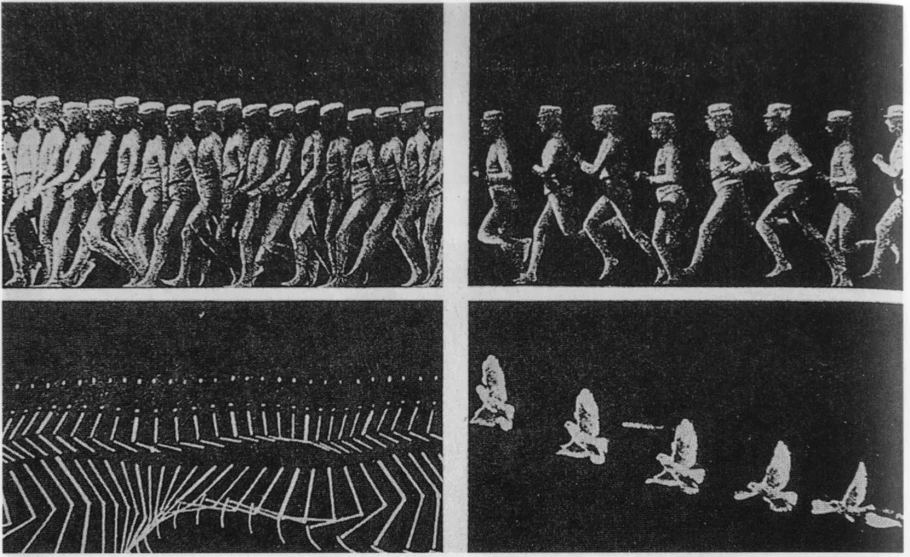
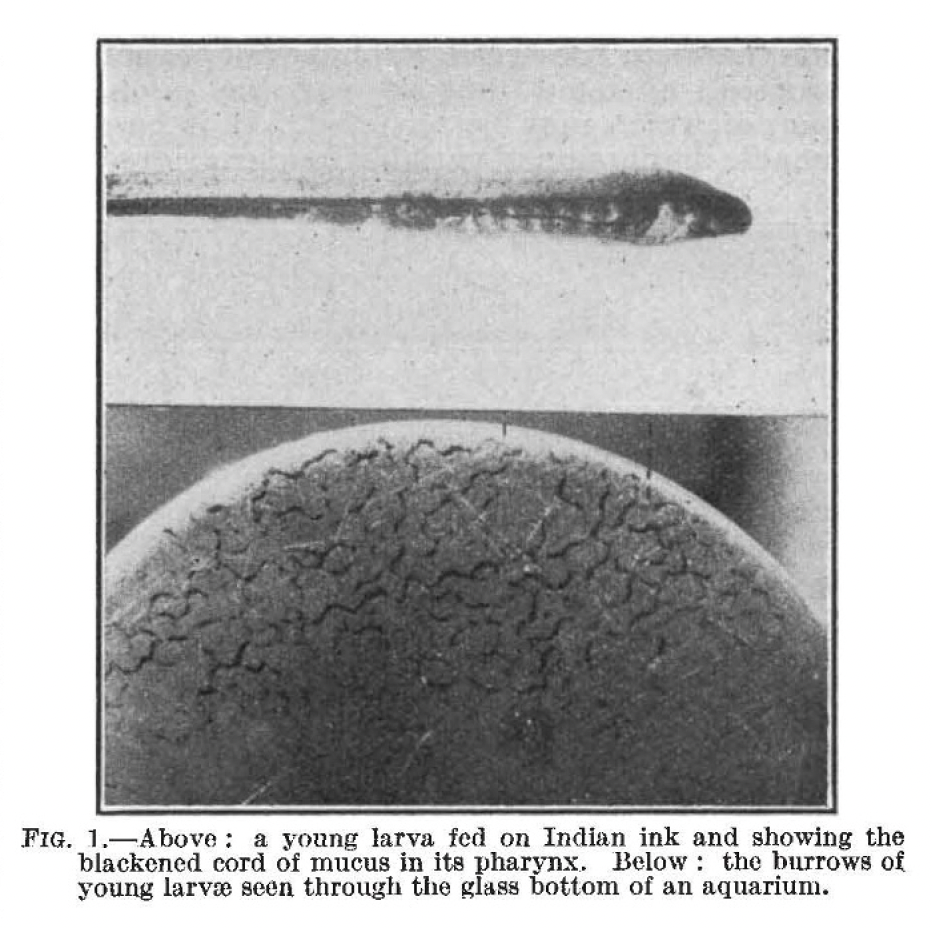
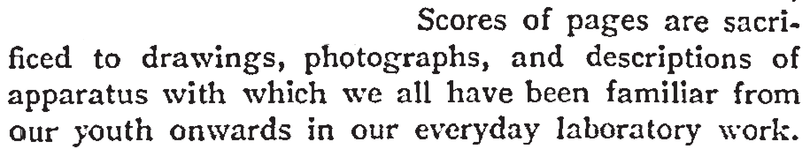
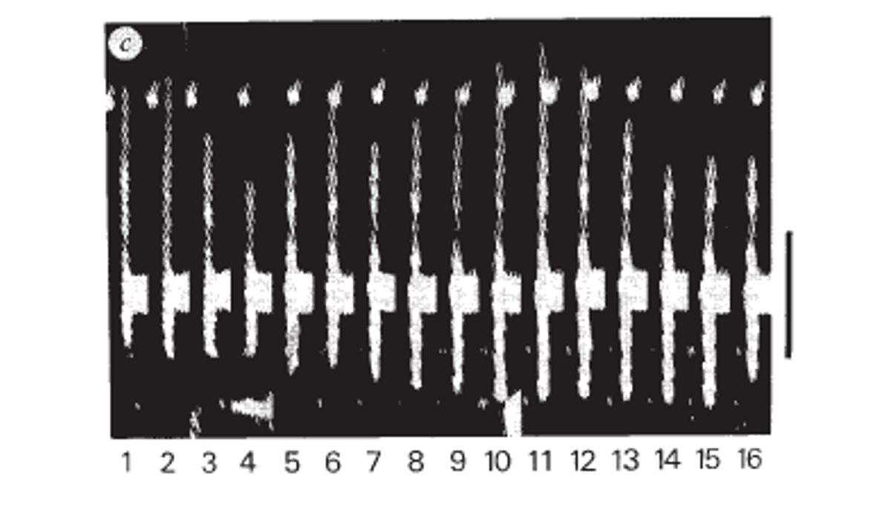

(A very short) History of Bio-Images
Images were essential for scientific communication long before the era of photography and light microscopy. The first images were drawings in medical and pharmaceutical text books from antiquity. While these drawings to us today have an artistic quality, they very much serve a scientific point: for better comparison and identification, specimen are aligned, oriented, and size-standardized.

Later, scientific drawings and copper plates intentionally showed “averages” of specimen, the drawing essentially being an overlay of many observed individuals. Maria Sibylla Merian and others who documented nature explained the size of specimen in their drawings and often included known insects that could double as scale information.

Photography
With the advent of photography, publications started to include photos and microscopic images of specimen. A pioneer of photographic images in biomedical sciences was the physiologist Marey. Étienne-Jules Marey developed many medical apparatuses, and notably the first “chronophotographic gun” in 1882 which allowed him to capture twelve frames per second on the same picture to document the rapid movements of animal and human locomotion. Notably, Marey also authored the first text book of data visualizing for physiology, introducing many scientists to charts and images for collecting biomedical data. The book, La Méthode graphique dans les sciences expérimentales can be viewed online in French (Text on line) and was recently translated by George Hattab and RJ Andrews (https://medium.com/nightingale/information-graphic-visionaries-6dda1a0b8056).

At the turn of the last century, the first photographs appeared in scientific journals and slowly photos were used to document biological observations made through the microscope, e.g. Newth’s microscopic image of lamprey’s larvae. At the same time, Friedrich Kopsch in Berlin captured serial time-lapse images to document gastrulation in axolotl and frog eggs.

Image in scientific publications however were not always well received – in a letter to the editor, Benjamin Moore complained in 1910 that “Scores of pages are sacrificed to drawings, photographs, and descriptions of apparatus with which we all have been familiar from our youth onwards in our everyday laboratory work.”

The invention of fluorescent markers and techniques to couple these to antibodies by Albert Coons made light microscopy a mainstream technique widely accepted and images became accepted as data also outside its core application fields, embryology and morphology. With the invention of photography, and in particular digital photomicrography, a steady increase in images figures is noticeable in scientific articles. Today 20% of the articles indexed in PubMed contain image figures and in the 10-15 minutes you spend reading this article, 5 new publications with images will appear.

More literature on scientific images
- A seminal book that describes how images became data in science: Daston L, & Peter Galison, P. . Objectivity. New York: Zone Books; 2007
- A book in German that outlines the history of science images: Stückelberger A. Bild und Wort: Das illustrierte Fachbuch in der antiken Naturwissenschaft, Medizin und Technik: P. von Zabern; 1994
- A book about early observations and images in embryology.Wellmann J. Model and movement: studying cell movement in early morphogenesis, 1900 to the present. Hist Philos Life Sci. 2018;40(3):59.
- NEWTH, H. The Feeding of Ammocœtes. Nature 126, 94–95 (1930) Article